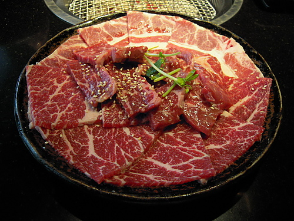
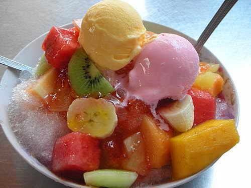
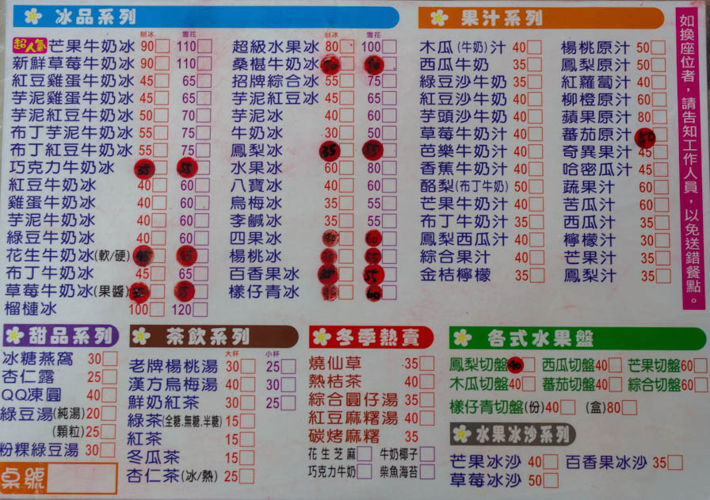
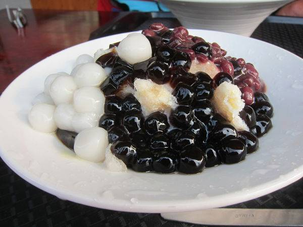
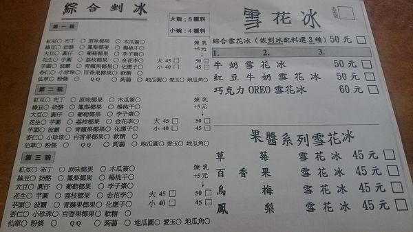

首頁
English
中文
台南
景點
美食
節日
交通
參考網站
奇美博物館
台江國家公園
台南旅遊網站
高雄
景點
美食
節日
交通
參考網站
高雄捷運
國立科學工藝博物館
駁2藝術特區
南台灣
美食
碳佐麻里
類別：烤肉，日本料理，燒烤
地址： 高雄市鼓山區美術東四路562號
營業時間：11:30AM至12AM
服務:
在一般的燒烤餐廳裡，他們只賣一般的烤肉。但是在碳佐麻里, 他們不只注重肉的品質，也擁有乾淨的環境、特別的房屋設計、 和友善的服務。碳佐麻里和其他燒烤店最大的不同就是你可以自己動手烤肉，享受自己為自己享受做菜的樂趣。

高雄婆婆冰
類別：冰產品，甜品
地址：高雄市鹽埕區七賢三路135號
營業時間：9AM至12AM

菜單

下坑豆花36年老店
類別：甜品，豆花
地址： 821高雄市阿蓮區忠孝路166
營業時間：8:00AM至11:00PM

菜單
